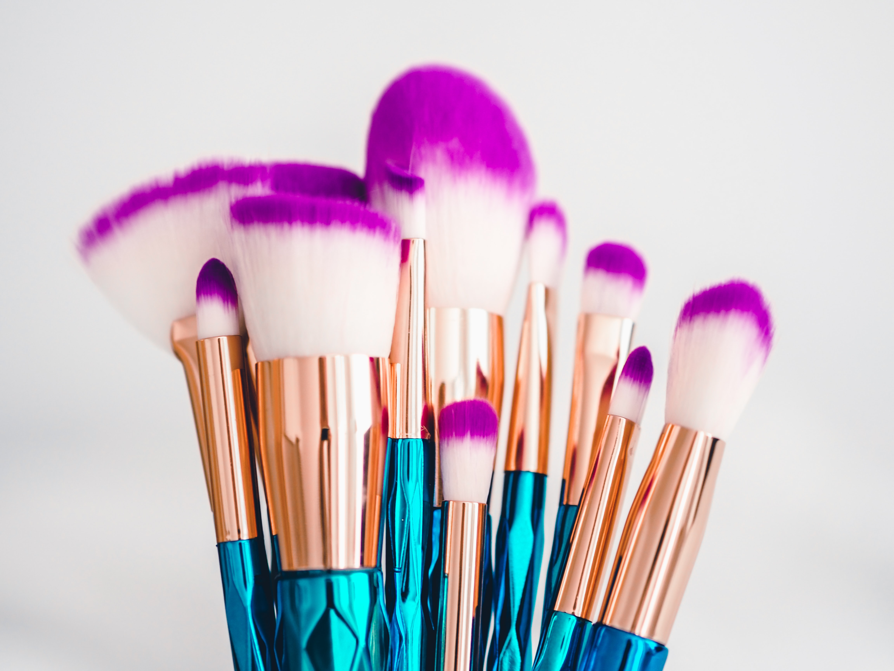
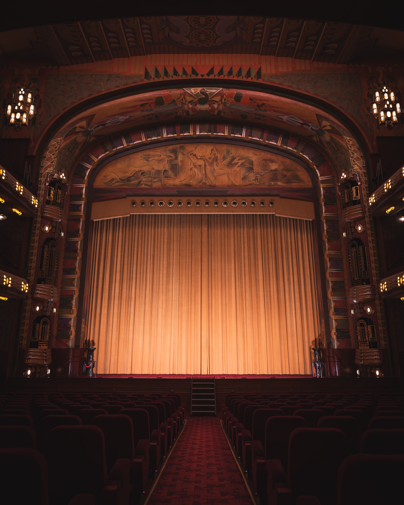

Page profil

Hello ! Je m'appelle Johanna Arfi, j'ai 21 ans et j'habite entre Paris et Marseille. Depuis septembre 2022, je suis en Master 1 - Marketing digital à Kedge Business School 💼
Grâce à cette page profil, vous pourrez en apprendre plus sur moi, sur mes passions et ce que j'aime faire dans la vie. ☀️
Tout d'abord, je vous laisser découvrir mon école en cliquant sur ce bouton.
Kedge BSVoyages ✈️
Depuis petite, j'aime voyager à travers le monde et découvrir de nouveaux paysages, de nouvelles cultures...
J'ai eu la chance de partir en Thaïlande, aux États-Unis, ou encore au Canada.
Cuisine 👩🏻🍳
Depuis le confinement, j'ai développé une passion pour la cuisine et principalement la pâtisserie.
J'aime réaliser des gâteaux et autres desserts, afin de faire plaisir à mes amis et à ma famille.

Beauté 💄
Depuis le collège, j'aime beaucoup les cosmétiques ainsi que le maquillage.
Je prends un réel plaisir à créer des maquillages aussi bien artistiques, que des maquillages effets spéciaux...
Théâtre 🎭
J'ai découvert le théâtre au collège à 11 ans. J'ai ensuite continué et j'en ai pratiqué au lycée dans une classe spécialisée pendant 3 ans.
